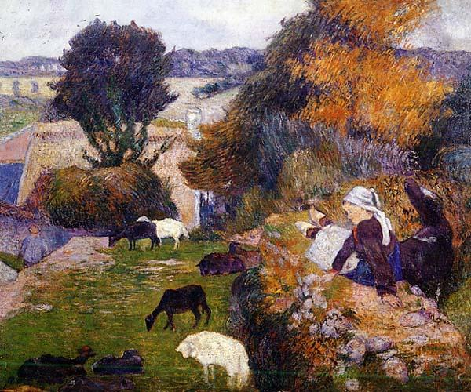

|
BRETON (Version KLT) E MELRAN ESKOPTI GWENED 1. E Melran, eskopti Gwened Ez eus erruet ur forfeit Gand ur maleürus kemener E-kever ur werc'h eus e ger. 2. Eñ a oa Per Gweganik [1] Bepred libertin ha lubrik. Hi a oa Morised Jaffrezoù E Lokmaria choment o daoù. 3. -Morised din e larefet Da belec'h a ait gand ho loened? - Moned a raint d'an Trionnoù, Peotramant da bark Bolannoù. - 4. 'Deiz ma vire loened he zad, Morised n' soñje 'med e mad Hag errue ar maleürus-hont Ur c'hrog-pouezer e-barzh e zorn. 5. - Bonjour, Morised Jaffrezoù, Te az-peus laret din ur gaoù: Te lare 'vefes aet d'ar Trionnoù... Setu te deuet d'ar Pradigoù! 6. Gwech arall pa oan kemener, [2] Ne istimes ket va micher. Setu me bremañ ur c'hroger Ha ne m'istimez ket evit-se. 7. Cheñch a vicher mar garan Te ra bepred goap anezhan! Morised, te a gousanto, E gwirionez, pe m'ho lazho! - 8. - Gwell eo ganin mervel mil gwech Eged ofañsiñ va Doue ur wech. - Mez ar maleürus e koler O komz dezhan e oa dañjer. 9. Eñ a zavas e bomelenn, E grog-pouezer war lein he fenn. - Gwerc'hez Vari a Wir-Sikour, Me akord deoc'h-c'hwi va inour; 10. Ha va furted ha va ene Dre ho touarn me o lakan. C'hwi zo mamm an oll gwerchezed, Gwerc'hez, ne m'abandonit ket! - 11. Etre kreisteiz ha unneg eur E erruas he zad er ger. He zad en ti pa errue A welas anken ha tristez. 12. - Va bugale, din e larit Petra zo kaoz mard'oc'h chifet? Perag ez oc'h ken ankenet? Pelec'h ema va merc'h Morised? - 13. - Va zad abred e ouiot Traoù diwar hor c'hoar Morised; Ema du-hont er Pradigoù, Gwad dindani a bouladoù. 14. - Va bugale, din e larit Ha piv e-deus bet he lazhet? - Per Gweganig, un den kriz, Deus he lazhet en ivrogndi. - 15. - Forzh an nozh, multrer debordet, Petra deuz graet dit Morised? Petra deus graet va merc'h dit-te Met diwall doc'h da falsantez? - 16. Antronoz e oa bet kaset Da Velran da vout interet. Evel ma 'z ae Morised d'an douar, E tivere gwad doc'h ar c'harr. 17. An ton a oa ken hirvouduz Ar chif a oa ker glac'haruz. Ar c'hleier eus ar c'hanton A zonne holl gant an dasson. 18. E Melrand e-kreiz ar vered Ema interet Morised Ur groaz kaer a zo war he bez [3] Evit deskiñ he fidélité. 19. Un arall zo lakaet ivez [3] Lec'h ma oa kollet he buhez. Mar deuit d'ar Gelven benniget C'hwi a gavo kroaz Morised. 20. Merc'hedigoù yaouank, selaouit, Kemerit skouer deuz Marised: C'hoantit mervel giz Morised Eged kouezhañ er pec'hed. 21. Nag e kollfec'h ho puhez Z eus moien d'ho sekour goude; Mez mar kollit-chwi hoc'h enor, Vioc'h ket kapabl d'en em sikour. [4] Transcrit par Christian Souchon |
FRANCAIS A MELRAND, EVECHE DE VANNES 1. A Melrand, évêché de Vannes Un crime affreux fut perpétré Par un tailleur, un être infâme, Contre une enfant de la cité. 2. Lui c'était Guégannic Pierre, [1] Athée lubrique invétéré, Elle, Jaffrézo Mauricette. A Locmaria tous deux vivaient. 3. - Oh, me diras-tu, Mauricette, Avec tes moutons, où vas-tu? Je mène aux Trionnou mes bêtes Ou peut-être au champ Bolannou. - 4. Gardant le troupeau de son père La belle à mal ne songeait point, Quand apparut cette vipère Son croc à peser à la main. 5. - Mais c'est Jaffrézo Mauricette Qui m'aura menti, dirait-on. Aux Trionnou tu disais être: Aux Pradigou te voici donc! 6. Lorsque j'étais tailleur naguère [2] Mon métier ne te plaisait point. Me voilà marchand: au contraire Tu ne m'en méprises pas moins. 7. Et quelque métier que je fasse, Tu me traites avec mépris. Viens donc ici de bonne grâce, Ou sinon, crois-moi, je t'occis! 8. - Mille fois la mort je préfère A cette affreuse offense à Dieu.- Mais un scélérat en colère N'en devient que plus dangereux. 9. Au dessus de sa tête il lève La balance munie du croc. - Vierge de Bonsecours, préserve Mon honneur. Je meurs s'il le faut. 10. Et la pureté de mon âme, Je la remets entre tes mains. Toi, la Vierge d'entre les vierges, Pitié, ne m'abandonne point! - 11. Entre onze et douze heures son père Ce jour-là rentre à la maison. Il voit des visages qu'altèrent Tristesse et consternation. 12. - Enfants, me direz-vous la cause, Du chagrin qu'on lit dans vos yeux? Qu'est ce donc qui vous rend morose? Mauricette, est-elle en ces lieux? 13. - Elle n'est point ici, mon père, Mais, puisqu'il faut vous dire tout Dans son sang, face contre terre, Elle est là-bas aux Pradigou. 14. - Mes enfants, au nom du Ciel, dites, Qui donc a commis ce forfait? - Pierre Guégannic, un sadique: Il avait bu. Il a tué. 15. - Vil meurtrier, O misérable! Dis-moi que t'avait-elle fait? De quoi donc est-elle coupable? De repousser ta lâcheté? 16. Le lendemain on prit la route Pour Melrand où l'on l'enterra. Son sang, tout au long, goutte à goutte, De la charrette s'écoula. 17. Ce fut, hélas, un chant d'angoisse Chant de tristesse et d'affliction, Que les cloches de la paroisse Répétèrent à l'unisson. 18. En plein milieu du cimetière Mauricette gît, à Melrand. Sur sa tombe une croix de pierre [3] Rappelle sa mort aux vivants. 19. Une autre croix aussi s'élève [3] Sur le lieu même de sa mort Et les pèlerins de Quelven Sur leur chemin la voient encor. 20. Prêtez bien l'oreille, fillettes: C'est un exemple à méditer. Mieux vaut la mort de Mauricette Que de tomber dans le péché. 21. Passe encor de perdre la vie Si de l'enfer on est sauvé. Tandis qu'une vertu salie Vous damne pour l'éternité. [4] Traduction Christian Souchon (c) 2013 |
ENGLISH AT MELRAND, DIOCESE OF VANNES 1. At Melrand, diocese of Vannes There was a report of murder Of a young maiden of the town. By a nefarious tailor 2. Peter Guégannic was the name [1] Of the base, lustful Lothario And spotless was the virgin fame Of young Mauricette Jaffrezo. 3. - Mauricette, would you tell me Where are you going with your flock? - It shall graze on Trionnou lea Or else on Bolannou hillock.- 4. Mauricette, with her father's sheep, Once did not think of ill or shame But what she spied made her flesh creep: With his hook weight scale there he came! 5. - Good morning, Mauricette, said he, Apparently, you told a lie: You are not on Trionnou lea, But on Pradigou, as I spy! 6. I was formerly a tailor [2] And my calling you did despise. Now I've become a cloth hawker; Your regard for me did not rise. 7. Change my trade and craft as I may, You always will make fun of me! Now Mauricette you shall obey Or, truly, I'll kill you, said he. 8. - A thousand times I'd rather die Than offend but one time my God! - But with rascals who curse and cry Arguing is vain, by all the odds. 9. He lifted high over her head The scale with the terrible hook. - Lady of Good-Succour, she said, I entreat you, on my grief look! 10. Into your hands my fame and life I entrust and my salvation. Virgin who protect maid and wife, Protect me on that occasion! - 11. T' was eleven o'clock or noon When the housemaster returned home. And the poor father noticed soon That about the house anguish roamed. 12. - Children, tell me the reason why I find you all so dejected? Why are you all prostrate and sigh? By the way, where is Mauricette? 13. - Father, too soon you shall hear how Our sister Mauricette did fare... If you go up to Pradigou: In a pool of blood she lies there! 14. - But my children, you must tell me, Who has committed this offence?. - Oh, only one man it could be: Pierre Guégannic, in drunkenness. 15. - Vile ravisher, horrid killer! Had my Mauricette done you wrong? That she would foil an offender, You could have seen it all along! - 16. Next morning they removed the corpse: To Melrand churchyard it was shipped. And while the digger did his works, Down the cart wheels the blood has dripped. 17. T' was quite in a heartbreaking tone, That the bells struck up their lament, All the bells, aye, of the canton To dignify this sad event. 18. Amidst Melrand churchyard rises A stone cross on Mauricette's grave: [3] To save from oblivion it strives Her gallant strife against a knave. 19. Another cross was erected [3] Where the proud lass her life forsook On my way to Quelven I saw it: By the wayside, up there, it stood. 20. Young girls, listen to my ballad! Over it, young girls, ponder well: Prefer to die like Mauricette Rather than fall into sin's well. 21. Choose to lose your life here below And enjoy bliss for ever more! For if your honour is stained, know That forever you are done for! [4] Translation: Christian Souchon (c) 2013 |
|
[1] Cette version diffère de celle de La Villemarqué principalement par le nom du criminel. Ce n'est pas Yannick Scolan, ici, mais Pierre Guégannic. [2] A propos du préjugé des Bretons contre les tailleurs, voir Les Nains. [3] Le cimetière et la croix de Melrand n'existait plus en 1907, comme l'indique l'abbé Cadic dans la "Paroisse". La croix du Pradigo existe encore. [4] L'Abbé François Cadic ne trouve rien à redire à cette morale surprenante! |
[1] This version differs from La Villemarqué's version chiefly by the name of the murderer. Not "Yannick Scolan", but "Pierre Guégannic", in the present song. [2] Concerning the Bretons' prejudice against the tailors, see The Gnomes. [3] The churchyard and the Cross of Melrand did no longer exist in 1907, as stated by Abbé Cadic in "The Breton Parish in Paris". But the Pradigo cross still exists. [4] The Reverend François Cadic apparently can't see anything wrong with the surprising moral of this story! |